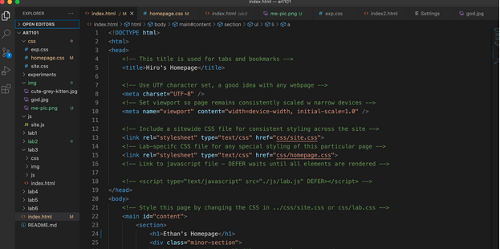
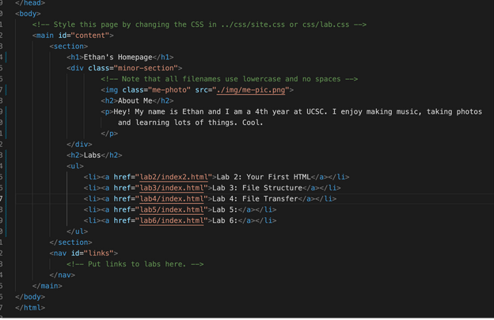
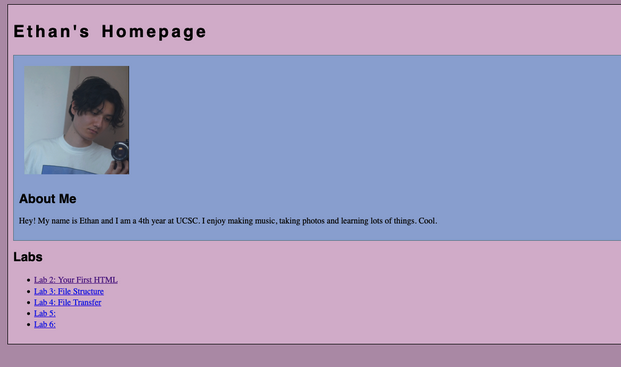
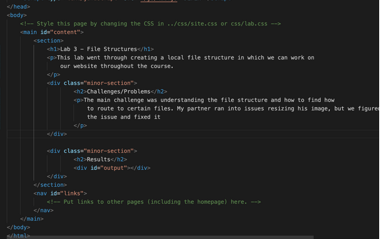

Lab 3 - File Structure
Challenge
The challenge of the lab was to create a file structure that allowed for ease of use. Additionally the challenge was to create a site with navigational links and a page like this.
Problems
I had trouble figuring out how to scale my images properly and to set limits, but eventually I figured it out through talking with my partner and googling.
Reflection
I thought the assignment went well, I put a lot of energy into trying to get my site to work and I think it payed off. It was helpful to work it through with my partner.
Results

File structure
HTML of homepage
Homepage result
Lab 3 Results HTML